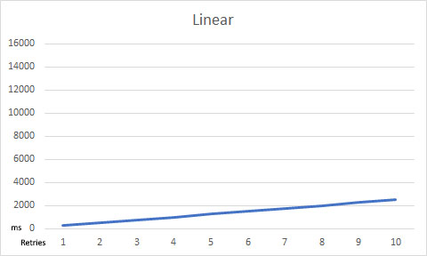
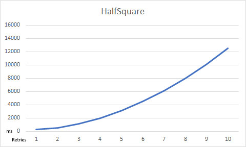
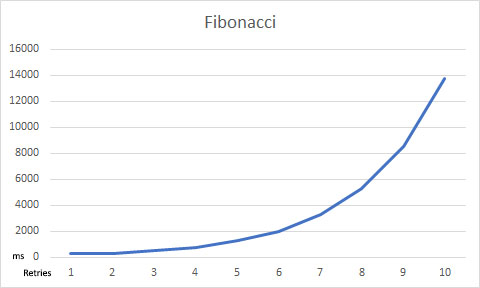
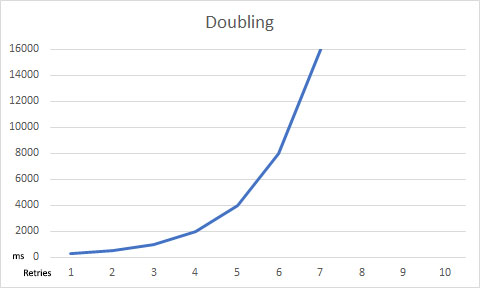

Configuration Deep-Dive
Introduction
ArgentSea fully leverages the configuration architecture of .NET core/.NET standard. If this architecture is new to you, it essentially consists of two parts:
- A configuration dictionary, which can be loaded from multiple sources, one of which is a file called appsettings.json
- An “options” architecture, which casts the configuration entries into a strongly-typed configuration object.
One of the key improvements of the configuration architecture in .NET standard is the dictionary architecture, which allows entries to be loaded from multiple sources. So, for example, you might load the account names from an appsettings.json configuration file, the passwords from a usersecrets.json file (or Key Vault), and the server names from environment variables. Properly managed, this can make deployments both easier and more secure.
ArgentSea Database Connections
There are two types of database connections in ArgentSea:
- A database connection - a data set which is hosted by a single database
- A shard set - a single data set spread over multiple database connections
ArgentSea configuration supports any number of database connections and any number of shard sets. And of course each shard set can have many database connections.
Limiting Redundancy Across Multiple Connection Definitions
This creates a potentially large number of database connections. Many of these will likely have similar connection information. In many scenarios, all of the connections in a shard set would use the same login information. Likewise, in a given datacenter environment it only makes sense that all connections use the same resiliency strategy.
To manage this redundancy, the ArgentSea configuration data is broken into four parts:
- Login credential information, which can be referenced by any connection.
- Data resilience strategies, any of which can be referenced by any connection.
- Database connection information
- Shard set connection information
Credentials
If you are using json configuration files to manage your configuration, the credentials section in your configuration might look like this:
"Credentials": [
{
"SecurityKey": "0",
"UserName": "webuser",
"Password": "123456"
},
{
"SecurityKey": "1",
"WindowsAuth": true,
},
{
"SecurityKey": "2",
"UserName": "admin",
"Password": "7890"
}
]
If you prefer to set the properties of an Options class directly, you can use the ArgentSea.DataSecurityOptions class.
You should put this configuration section into a secure location. In a development environment, you should consider using the UserSecrets functionality, which prevents this information from being checked into your source code repository. In other environments, you might consider using you should use AWS Secrets Manager, Azure Key Vault, or something similar.
The SecurityKey property must be unique and exactly match the security string key that you specify on your connection (i.e. both must have the same casing).
Resilience Strategies
Resilience strategies define how ArgentSea recovers from unexpected failures, usually through some combination of retry logic and circuit breaking. Because one typically requires only a few resilience strategies across datacenters (perhaps one for local connections and another for across the WAN), to reduce redundancy we use the same keyed approach as for security.
A general Resilience Strategy is implicit. If a connection does not specify a Resilience Strategy, this default one will be used. If it is defined, the corresponding connection(s) must specify the key (again, casing matters).
An example resiliency configuration section might look like this:
"ResilienceStrategies": [
{
"DataResilienceKey": "local",
"RetryCount": "6",
"RetryInterval": "150",
"RetryLengthening": "Linear",
"CircuitBreakerFailureCount": "10",
"CircuitBreakerTestInterval": "5000"
},
{
"DataResilienceKey": "remote",
"RetryCount": "6",
"RetryInterval": "250",
"RetryLengthening": "Fibonacci",
"CircuitBreakerFailureCount": "20",
"CircuitBreakerTestInterval": "5000"
}
Retries
Not that retries only occur on errors that are defined as transient. A permissions error or invalid object reference would be pointless to retry. (The list of errors defined as transient is in the provider-specific implementation of IDataProviderServiceFactory. You can view this in the source code).
The RetryCount setting determines how many times the connection retries before aborting
and raising an error back to the caller.
The RetryInterval determines the length of time (in milliseconds) between retries.
The RetryLengthening value can add an additional pause between subsequent retries.
One might presume that if the system encounters a transient error, it should retry quickly. Then, if the retry is not successful, it should wait a bit longer for the error to clear before retrying again. The `RetryLengthening1 value is what determines how much longer it will pause on subsequent retries before giving up.
The RetryLengthening values are:
- Linear - each retry is the same duration as specified in
RetryInterval - Fibonacci - The first retry is at
RetryInterval, each subsequent retry interval pauses for the duration of the previous two combined. - HalfSquare - the retry count number is squared, then divided by two, then multiplied by
RetryInterval - Squaring - each retry attempt doubles the duration of the previous one.
You can visualize the impact of RetryLengthening with these charts:




If a Resilience Strategy is not defined, ArgentSea will use a default strategy. Currently, this is:
| Setting | Default Value |
|---|---|
| RetryCount | 6 tries |
| RetryInterval | 256 milliseconds |
| Lengthening | Fibonacci |
With these values, the default resilience strategy would take a total of five seconds to finally fail.
Note that a high RetryCount could create a very long delay before a connection is allowed to ultimately fail.
Circuit Breaking
When a database connection is unavailable, this can cause serious downstream problems. Processes may pile-on further requests even while earlier requests are simply waiting to time out. As this continues, the queue of backlogged requests becomes so large that the caller itself can manage no more. This bottleneck can block other systems too. What started as a broken connection to a single database eventually becomes fatal to the calling system too!
This is the reason to add a “circuit breaker” — a fail-fast mechanism to ensure that callers do not wait needlessly for queued connections that are unlikely to succeed, and which are blocking other processes too.
When the circuit breaker is tripped, subsequent connections will fail immediately. This prevents queuing, bottleneck blocking, and downstream failures. While tripped, the circuit breaker will periodically allow a single transaction to proceed; if it successful the circuit breaker is reopened. In this way, a system restoration will automatically close the circuit breaker too so that connections can resume.
The CircuitBreakerFailureCount value determines how many sequential failures will trigger the circuit breaker. The CircuitBreakerTestInterval value determines
how often (in milliseconds) the circuit breaker will allow a single transaction through.
Database Connections
The database configuration architecure allow any number of database connections. Each connection is identified by a key, which you also use to request the connection in your code.
The connection information is specific to the database provider.
SQL Server Database Connections
For SQL Server, the entire set of attributes would look like this:
"SqlDbConnections": [
{
"DatabaseKey": "MyDb",
"DataConnection": {
"SecurityKey": "0",
"DataResilienceKey": "remote",
"ApplicationIntent": "ReadWrite",
"ApplicationName": "MyWebApp",
"ConnectRetryCount": 0,
"ConnectRetryInterval": 0,
"ConnectTimeout": 2,
"CurrentLanguage": "english",
"DataSource": "localhost",
"Encrypt": false,
"FailoverPartner": "",
"InitialCatalog": "MyDb",
"LoadBalanceTimeout": 0,
"MaxPoolSize": 100,
"MinPoolSize": 0,
"MultipleActiveResultSets": false,
"MultiSubnetFailover": true,
"PacketSize": 8000,
"PersistSecurityInfo": false,
"Pooling": true,
"Replication": false,
"TrustServerCertificate": true,
"TypeSystemVersion": "Latest",
"WorkstationID": ""
}
}
]
You do not need include all of these attributes in your connection! Any value not included in your configuration will be set to the provider default — except as described in the next paragraphs.
The ConnectRetryCount, ConnectRetryInterval values default to 0 because the ArgentSea retry logic duplicates this functionality. If you prefer to use the SqlClient retry functionality instead, set these to their desired values and specify a ResilienceStrategy with no retries. If you use both connection retries and ArgentSea retries, no harm will come, other than a lot of retries.
The other exception to the provider default values is the ConnectTimeout value. The provider default is 15 seconds, but with the ArgentSea’s retry logic, this could create
unnecessarily long connection timeouts. The ArgentSea default is 2 seconds because datacenter connections are easily resolved in that time unless something is wrong.
If you have a WAN or high-latency connection (or are using ConnectRetryCount), you should consider increasing this value.
If you accept the defaults, the only required parameter values are:
"SqlDbConnections": [
{
"DatabaseKey": 1,
"DataConnection ": {
"SecurityKey": "2",
"DataResilienceKey": "remote",
"DataSource": "localhost",
"InitialCatalog": "MyDb",
}
}
]
Shard Set Connections
A shard set represents a single set of data that is spread among multiple database servers. This structure is common for high-performance data access, since it is usually more cost effective and predictably scalable to have multiple smaller database servers than to build one massive server. Global applications might try to improve performance for their global users by distributing shards in datacenters around the globe. The ArgentSea data access components allow you to query across multiple servers or a find specific record on its corresponding host server.
From a configuration perspective, sharded data introduces three concerns:
- Sharded data requires a larger number of database connections to manage.
- Scaled out data often uses different connections for read operations and write operations.
- Because sharded records often need to refer to related records hosted in other shards, the shard identifier become part of the record key.
Managing Database Connections
Sharded data sets may run to hundreds of servers (or more). ArgentSea manages any number of distinct shard sets and any number of connections in each shard set.
You could have a distinct shard set for, say, all of your subscriber information and a separate shard set for all of your operational data. You define the shard set name in your configuration; when you query a shard set, you simply specify the shard set name.
Distinct Read and Write Endpoints
If you are scaling-out your data access by sharding your data, you are likely also scaling-out by separating read activity from write operations. Examples of this includes SQL Availability Groups, RDS Read Replicas, Azure SQL geo-replication, Aurora reader endpoints, etc.
An ArgentSea ShardSet has both read connections and write connections. Only one of these must be defined. If only one is defined, it will be used for both reads and writes.
Complicating this is the replication latency between the write/read servers. A read immediately following a write might fail because the expected data has not yet been copied to the read server.
To accommodate replication latency when an expected read-only result is not retrieved, ArgentSea will immediately retry the query on the write connection under the following conditions:
- The query arguments indicate that it is read-only data fetch.
- The read connection is different than the write connection.
- The query handler returns a null object (i.e. a parameter attribute is marked required but the database value is (db) null or a custom handler returns null).
The Shard Identifier Type
Each database in a shard set has a shard identifier (shardId). The shardId is used in combination with the record key to uniquely identify a record. In other words, records in the shard set are identified with a sort of virtual compound key, consisting of the shard identifier and the record key.
Note
Records within a shard set are uniquely identified with a sort of virtual compound key — a ShardKey — consisting of the shardId and the record identifier.
The data type of the ShardId is important because a record in a data shard may refer to records in other shards. Persisting the remote shard reference means saving the shard identifier too.
In other words, the ShardId type is used in configuration, throughout your code, in the database, and across all shard sets. Your configuration must also be aware of the nature of this shard key; the ShardId value in your json configuration file must be cast to your ShardId type.
Important
Once established, the ShardId type cannot be easily changed.
More details about the sharId type is in the Sharding section
ShardSet JSON
For SQL Server, a simple configuration would look like this (assuming that the ShardId type is an integer value):
"SqlShardSets": [
{
"ShardSetKey": "Set1",
"Shards": [
{
"ShardId": 0,
"ReadConnection": {
"SecurityKey": "0",
"DataResilienceKey": "local",
"DataSource": "LocalServer",
"InitialCatalog": "dbName1"
},
"WriteConnection": {
"SecurityKey": "0",
"DataResilienceKey": "remote",
"DataSource": "RemoteServer",
"InitialCatalog": "dbName1"
}
},
{
"ShardId": 1,
"ReadConnection": {
"SecurityKey": "0",
"DataResilienceKey": "remote",
"DataSource": "RemoteServer",
"InitialCatalog": "dbName2"
},
"WriteConnection": {
"SecurityKey": "0",
"DataResilienceKey": "local",
"ApplicationIntent": "ReadWrite",
"ApplicationName": "MyWebApp",
"ConnectRetryCount": 0,
"ConnectRetryInterval": 0,
"ConnectTimeout": 2,
"CurrentLanguage": "english",
"DataSource": "LocalServer",
"Encrypt": false,
"FailoverPartner": "",
"InitialCatalog": "dbName2",
"LoadBalanceTimeout": 0,
"MaxPoolSize": 100,
"MinPoolSize": 0,
"MultipleActiveResultSets": false,
"MultiSubnetFailover": true,
"PacketSize": 8000,
"PersistSecurityInfo": false,
"Pooling": true,
"Replication": false,
"TrustServerCertificate": true,
"TypeSystemVersion": "Latest",
"WorkstationID": ""
}
}
]
}
]
If the shardid were a string you should enclose the value in quotes (ShardId: "0").
The configuration file can repeat the ShardSet section (the object with ShardSetKey and Shards entries) for each shard set. Likewise, the entries in the Shards array can repeat for every data shard in the shard set. As illustrated by Shard 1’s Write Connection, any connection can include a any number of provider-specific connection attributes.
Loading the Configuration
ArgentSea uses the built-in Options configuration and dependency injection architecture in .NET Core. The complexity of turning a JSON configuration file into a connection object is as simple as adding the services.AddSqlServices<TShard>(Configuration) extension method to the ConfigureServices method in your Startup class.
This example assumes that your shardId type is byte. If you use any other type, change the generic parameter.
If you use ArgentSea database connections without sharding, simply remove the generic declaration altogether (i.e. services.AddPgServices(Configuration); only).
public void ConfigureServices(IServiceCollection services)
{
...
// add your injectable logging provider
services.AddLogging();
// add the ArgentSea SQL database connections (shardId type: byte)
services.AddSqlServices<byte>(Configuration);
// now add your custom data classes, which use the data components
services.AddSingleton<MyDataStore>();
...
services.AddMvc();
...
}
This code references a Configuration property. It is common practice to obtain the configuration object from the constructor of the Startup class, then use this to set the Configuration property.
Simplified Data Connections
In .NET Core, any data repository class can use the ArgentSea data access component by adding and argument to its constructor.
if you any experience in .NET Core, requesting the database connection in any data access class is straightforward:
public MyDataAccessStore(SqlDatabases dbs, ILogger<MyDataAccessStore> logger)
{
...
The injected data access component allows the class to access any connection, which means that you would need to specify the connection name. In most cases, however, the class will only access a single data source.
To simplify the data access code, you can instead store only the relevant connection instance:
private readonly SqlDatabases.DataConnection _data;
public MyDataAccessStore(SqlDatabases dbs, ILogger<MyDataAccessStore> logger)
{
...
_data = dbs.DbConnections["MyConnectionName"];
...
Subsequent calls to the SQL database can be on methods directly on the _data object.
The flexibility of the ShardSets object stands in more need of this simplification. Using the ArgentSea components requires that the generic ShardId type (which can never change) is declared redundantly. You can simplify this is two ways:
- Use the
usingstatement to alias the ShardSet declaration. - Declare a internal class which inherits from ShardSet
To simplify calling a ShardSet within a single file, simply add:
using ShardSets = ArgentSea.Sql.SqlShardSets<byte>;
// and/or
using ShardSet = ArgentSea.Sql.SqlShardSets<byte>.ShardDataSet;
Again, the assumes a ShardId type of byte; replace this as appropriate.
By creating a local class that inherits from then generic class, you can simplify the shard set reference throughout your project.
public class ShardSets : SqlShardSets<byte>
{
public ShardSets(
IOptions<SqlShardConnectionOptions<byte>> configOptions,
IOptions<DataSecurityOptions> securityOptions,
IOptions<DataResilienceOptions> resilienceStrategiesOptions,
ILogger<ShardSets> logger
) : base(configOptions, securityOptions, resilienceStrategiesOptions, logger)
{
//
}
}
This approach will be helpful in reducing the number of times the generic shardId type must be specified in project.